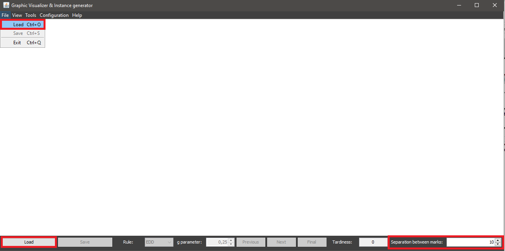
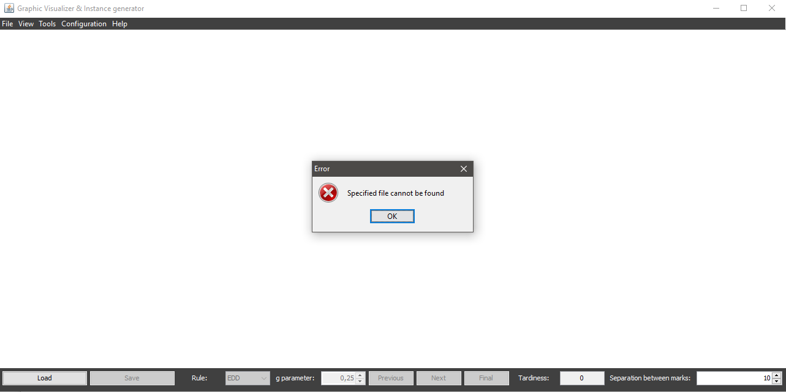
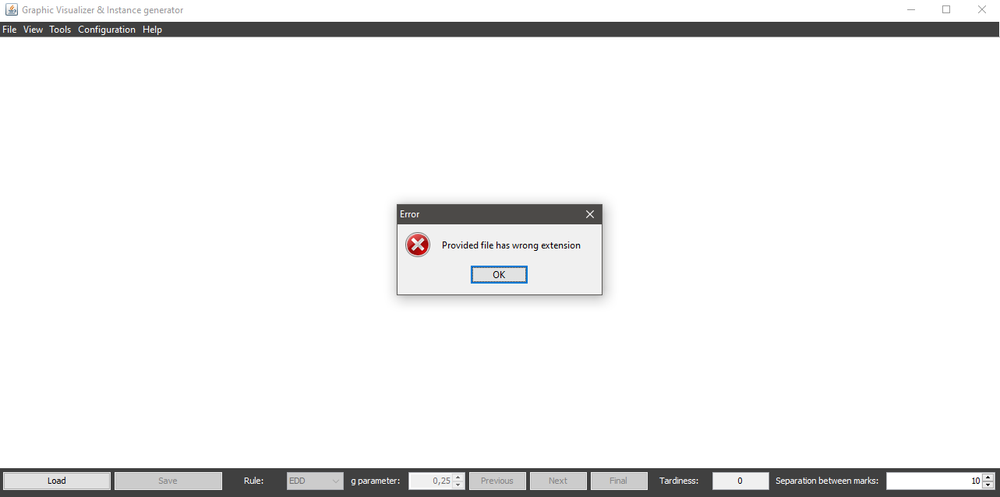
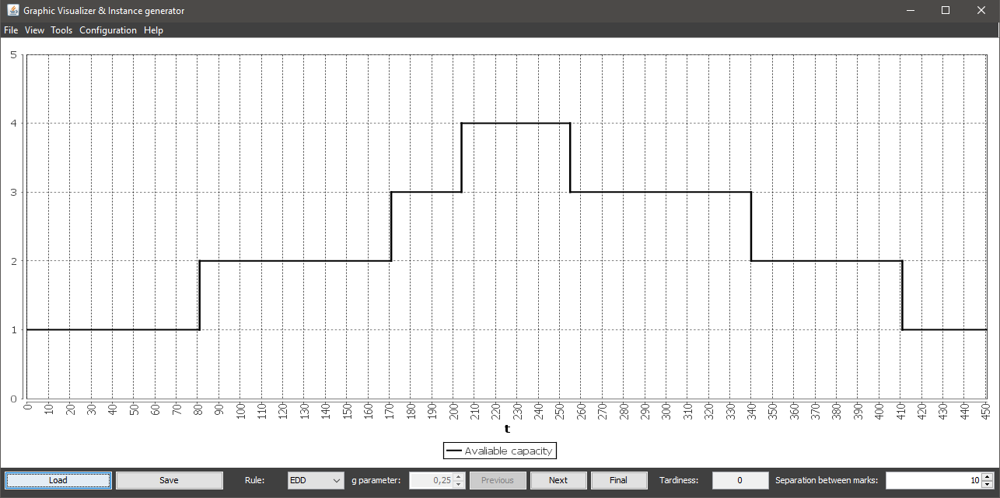

To load an instance it's neccesary to have an file with this format:
NOP: number of tasks
NINT: number of intervals
NINT lines, each one with three integers: [IntervalStart IntervalEnd IntervalCapacity] (300000 in IntervalEnd means infinite)
NOP lines, each one with three integers: [TaskIndex TaskDuration TaskDueDate]
Once you have a file, instance load can be accessed in different ways:
You can also modify the numeric value specified next to the Separation between marks label to choose which separation between graduation marks you want to display as you load the instance.
Once you access the option, a dialog is displayed where you can navigate through your folders to choose which file you want to load in different ways:

If the chosen file doesn't exist or has an invalid extension (different from txt) the system will warn the user:
 If the file exists and has a valid extension, but it has wrong format, the system will not warn the user, but the instance won't be loaded.
If the instance is succesfully loaded, it will be displayed in the main window:
